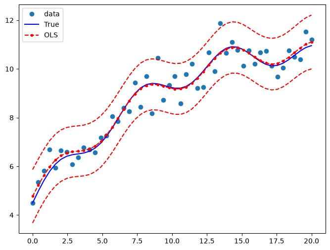
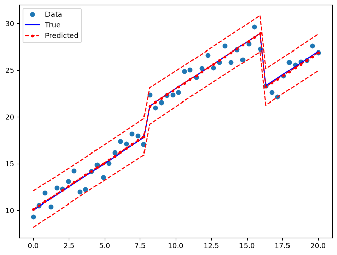

Ordinary Least Squares#
[1]:
%matplotlib inline
[2]:
import matplotlib.pyplot as plt
import numpy as np
import pandas as pd
import statsmodels.api as sm
np.random.seed(9876789)
OLS estimation#
Artificial data:
[3]:
nsample = 100
x = np.linspace(0, 10, 100)
X = np.column_stack((x, x**2))
beta = np.array([1, 0.1, 10])
e = np.random.normal(size=nsample)
Our model needs an intercept so we add a column of 1s:
[4]:
X = sm.add_constant(X)
y = np.dot(X, beta) + e
Fit and summary:
[5]:
model = sm.OLS(y, X)
results = model.fit()
print(results.summary())
OLS Regression Results
==============================================================================
Dep. Variable: y R-squared: 1.000
Model: OLS Adj. R-squared: 1.000
Method: Least Squares F-statistic: 4.020e+06
Date: Fri, 26 Jun 2026 Prob (F-statistic): 2.83e-239
Time: 10:53:49 Log-Likelihood: -146.51
No. Observations: 100 AIC: 299.0
Df Residuals: 97 BIC: 306.8
Df Model: 2
Covariance Type: nonrobust
==============================================================================
coef std err t P>|t| [0.025 0.975]
------------------------------------------------------------------------------
const 1.3423 0.313 4.292 0.000 0.722 1.963
x1 -0.0402 0.145 -0.278 0.781 -0.327 0.247
x2 10.0103 0.014 715.745 0.000 9.982 10.038
==============================================================================
Omnibus: 2.042 Durbin-Watson: 2.274
Prob(Omnibus): 0.360 Jarque-Bera (JB): 1.875
Skew: 0.234 Prob(JB): 0.392
Kurtosis: 2.519 Cond. No. 144.
==============================================================================
Notes:
[1] Standard Errors assume that the covariance matrix of the errors is correctly specified.
Quantities of interest can be extracted directly from the fitted model. Type dir(results) for a full list. Here are some examples:
[6]:
print("Parameters: ", results.params)
print("R2: ", results.rsquared)
Parameters: [ 1.34233516 -0.04024948 10.01025357]
R2: 0.9999879365025871
OLS non-linear curve but linear in parameters#
We simulate artificial data with a non-linear relationship between x and y:
[7]:
nsample = 50
sig = 0.5
x = np.linspace(0, 20, nsample)
X = np.column_stack((x, np.sin(x), (x - 5) ** 2, np.ones(nsample)))
beta = [0.5, 0.5, -0.02, 5.0]
y_true = np.dot(X, beta)
y = y_true + sig * np.random.normal(size=nsample)
Fit and summary:
[8]:
res = sm.OLS(y, X).fit()
print(res.summary())
OLS Regression Results
==============================================================================
Dep. Variable: y R-squared: 0.933
Model: OLS Adj. R-squared: 0.928
Method: Least Squares F-statistic: 211.8
Date: Fri, 26 Jun 2026 Prob (F-statistic): 6.30e-27
Time: 10:53:50 Log-Likelihood: -34.438
No. Observations: 50 AIC: 76.88
Df Residuals: 46 BIC: 84.52
Df Model: 3
Covariance Type: nonrobust
==============================================================================
coef std err t P>|t| [0.025 0.975]
------------------------------------------------------------------------------
x1 0.4687 0.026 17.751 0.000 0.416 0.522
x2 0.4836 0.104 4.659 0.000 0.275 0.693
x3 -0.0174 0.002 -7.507 0.000 -0.022 -0.013
const 5.2058 0.171 30.405 0.000 4.861 5.550
==============================================================================
Omnibus: 0.655 Durbin-Watson: 2.896
Prob(Omnibus): 0.721 Jarque-Bera (JB): 0.360
Skew: 0.207 Prob(JB): 0.835
Kurtosis: 3.026 Cond. No. 221.
==============================================================================
Notes:
[1] Standard Errors assume that the covariance matrix of the errors is correctly specified.
Extract other quantities of interest:
[9]:
print("Parameters: ", res.params)
print("Standard errors: ", res.bse)
print("Predicted values: ", res.predict())
Parameters: [ 0.46872448 0.48360119 -0.01740479 5.20584496]
Standard errors: [0.02640602 0.10380518 0.00231847 0.17121765]
Predicted values: [ 4.77072516 5.22213464 5.63620761 5.98658823 6.25643234 6.44117491
6.54928009 6.60085051 6.62432454 6.6518039 6.71377946 6.83412169
7.02615877 7.29048685 7.61487206 7.97626054 8.34456611 8.68761335
8.97642389 9.18997755 9.31866582 9.36587056 9.34740836 9.28893189
9.22171529 9.17751587 9.1833565 9.25708583 9.40444579 9.61812821
9.87897556 10.15912843 10.42660281 10.65054491 10.8063004 10.87946503
10.86825119 10.78378163 10.64826203 10.49133265 10.34519853 10.23933827
10.19566084 10.22490593 10.32487947 10.48081414 10.66779556 10.85485568
11.01006072 11.10575781]
Draw a plot to compare the true relationship to OLS predictions. Confidence intervals around the predictions are built using the wls_prediction_std command.
[10]:
pred_ols = res.get_prediction()
iv_l = pred_ols.summary_frame()["obs_ci_lower"]
iv_u = pred_ols.summary_frame()["obs_ci_upper"]
fig, ax = plt.subplots(figsize=(8, 6))
ax.plot(x, y, "o", label="data")
ax.plot(x, y_true, "b-", label="True")
ax.plot(x, res.fittedvalues, "r--.", label="OLS")
ax.plot(x, iv_u, "r--")
ax.plot(x, iv_l, "r--")
ax.legend(loc="best")
[10]:
<matplotlib.legend.Legend at 0x7f31d46f9160>

OLS with dummy variables#
We generate some artificial data. There are 3 groups which will be modelled using dummy variables. Group 0 is the omitted/benchmark category.
[11]:
nsample = 50
groups = np.zeros(nsample, int)
groups[20:40] = 1
groups[40:] = 2
# dummy = (groups[:,None] == np.unique(groups)).astype(float)
dummy = pd.get_dummies(groups).values
x = np.linspace(0, 20, nsample)
# drop reference category
X = np.column_stack((x, dummy[:, 1:]))
X = sm.add_constant(X, prepend=False)
beta = [1.0, 3, -3, 10]
y_true = np.dot(X, beta)
e = np.random.normal(size=nsample)
y = y_true + e
Inspect the data:
[12]:
print(X[:5, :])
print(y[:5])
print(groups)
print(dummy[:5, :])
[[0. 0. 0. 1. ]
[0.40816327 0. 0. 1. ]
[0.81632653 0. 0. 1. ]
[1.2244898 0. 0. 1. ]
[1.63265306 0. 0. 1. ]]
[ 9.28223335 10.50481865 11.84389206 10.38508408 12.37941998]
[0 0 0 0 0 0 0 0 0 0 0 0 0 0 0 0 0 0 0 0 1 1 1 1 1 1 1 1 1 1 1 1 1 1 1 1 1
1 1 1 2 2 2 2 2 2 2 2 2 2]
[[ True False False]
[ True False False]
[ True False False]
[ True False False]
[ True False False]]
Fit and summary:
[13]:
res2 = sm.OLS(y, X).fit()
print(res2.summary())
OLS Regression Results
==============================================================================
Dep. Variable: y R-squared: 0.978
Model: OLS Adj. R-squared: 0.976
Method: Least Squares F-statistic: 671.7
Date: Fri, 26 Jun 2026 Prob (F-statistic): 5.69e-38
Time: 10:53:50 Log-Likelihood: -64.643
No. Observations: 50 AIC: 137.3
Df Residuals: 46 BIC: 144.9
Df Model: 3
Covariance Type: nonrobust
==============================================================================
coef std err t P>|t| [0.025 0.975]
------------------------------------------------------------------------------
x1 0.9999 0.060 16.689 0.000 0.879 1.121
x2 2.8909 0.569 5.081 0.000 1.746 4.036
x3 -3.2232 0.927 -3.477 0.001 -5.089 -1.357
const 10.1031 0.310 32.573 0.000 9.479 10.727
==============================================================================
Omnibus: 2.831 Durbin-Watson: 1.998
Prob(Omnibus): 0.243 Jarque-Bera (JB): 1.927
Skew: -0.279 Prob(JB): 0.382
Kurtosis: 2.217 Cond. No. 96.3
==============================================================================
Notes:
[1] Standard Errors assume that the covariance matrix of the errors is correctly specified.
Draw a plot to compare the true relationship to OLS predictions:
[14]:
pred_ols2 = res2.get_prediction()
iv_l = pred_ols2.summary_frame()["obs_ci_lower"]
iv_u = pred_ols2.summary_frame()["obs_ci_upper"]
fig, ax = plt.subplots(figsize=(8, 6))
ax.plot(x, y, "o", label="Data")
ax.plot(x, y_true, "b-", label="True")
ax.plot(x, res2.fittedvalues, "r--.", label="Predicted")
ax.plot(x, iv_u, "r--")
ax.plot(x, iv_l, "r--")
legend = ax.legend(loc="best")

Joint hypothesis test#
F test#
We want to test the hypothesis that both coefficients on the dummy variables are equal to zero, that is, \(R \times \beta = 0\). An F test leads us to strongly reject the null hypothesis of identical constant in the 3 groups:
[15]:
R = [[0, 1, 0, 0], [0, 0, 1, 0]]
print(np.array(R))
print(res2.f_test(R))
[[0 1 0 0]
[0 0 1 0]]
<F test: F=145.49268198027963, p=1.2834419617282974e-20, df_denom=46, df_num=2>
You can also use formula-like syntax to test hypotheses
[16]:
print(res2.f_test("x2 = x3 = 0"))
<F test: F=145.49268198027949, p=1.2834419617283214e-20, df_denom=46, df_num=2>
Small group effects#
If we generate artificial data with smaller group effects, the T test can no longer reject the Null hypothesis:
[17]:
beta = [1.0, 0.3, -0.0, 10]
y_true = np.dot(X, beta)
y = y_true + np.random.normal(size=nsample)
res3 = sm.OLS(y, X).fit()
[18]:
print(res3.f_test(R))
<F test: F=1.224911192540883, p=0.30318644106313, df_denom=46, df_num=2>
[19]:
print(res3.f_test("x2 = x3 = 0"))
<F test: F=1.2249111925408838, p=0.30318644106312975, df_denom=46, df_num=2>
Multicollinearity#
The Longley dataset is well known to have high multicollinearity. That is, the exogenous predictors are highly correlated. This is problematic because it can affect the stability of our coefficient estimates as we make minor changes to model specification.
[20]:
from statsmodels.datasets.longley import load_pandas
y = load_pandas().endog
X = load_pandas().exog
X = sm.add_constant(X)
Fit and summary:
[21]:
ols_model = sm.OLS(y, X)
ols_results = ols_model.fit()
print(ols_results.summary())
OLS Regression Results
==============================================================================
Dep. Variable: TOTEMP R-squared: 0.995
Model: OLS Adj. R-squared: 0.992
Method: Least Squares F-statistic: 330.3
Date: Fri, 26 Jun 2026 Prob (F-statistic): 4.98e-10
Time: 10:53:51 Log-Likelihood: -109.62
No. Observations: 16 AIC: 233.2
Df Residuals: 9 BIC: 238.6
Df Model: 6
Covariance Type: nonrobust
==============================================================================
coef std err t P>|t| [0.025 0.975]
------------------------------------------------------------------------------
const -3.482e+06 8.9e+05 -3.911 0.004 -5.5e+06 -1.47e+06
GNPDEFL 15.0619 84.915 0.177 0.863 -177.029 207.153
GNP -0.0358 0.033 -1.070 0.313 -0.112 0.040
UNEMP -2.0202 0.488 -4.136 0.003 -3.125 -0.915
ARMED -1.0332 0.214 -4.822 0.001 -1.518 -0.549
POP -0.0511 0.226 -0.226 0.826 -0.563 0.460
YEAR 1829.1515 455.478 4.016 0.003 798.788 2859.515
==============================================================================
Omnibus: 0.749 Durbin-Watson: 2.559
Prob(Omnibus): 0.688 Jarque-Bera (JB): 0.684
Skew: 0.420 Prob(JB): 0.710
Kurtosis: 2.434 Cond. No. 4.86e+09
==============================================================================
Notes:
[1] Standard Errors assume that the covariance matrix of the errors is correctly specified.
[2] The condition number is large, 4.86e+09. This might indicate that there are
strong multicollinearity or other numerical problems.
Condition number#
One way to assess multicollinearity is to compute the condition number. Values over 20 are worrisome (see Greene 4.9). The first step is to normalize the independent variables to have unit length:
[22]:
norm_x = X.values
for i, name in enumerate(X):
if name == "const":
continue
norm_x[:, i] = X[name] / np.linalg.norm(X[name])
norm_xtx = np.dot(norm_x.T, norm_x)
Then, we take the square root of the ratio of the biggest to the smallest eigen values.
[23]:
eigs = np.linalg.eigvals(norm_xtx)
condition_number = np.sqrt(eigs.max() / eigs.min())
print(condition_number)
56240.87037739987
Dropping an observation#
Greene also points out that dropping a single observation can have a dramatic effect on the coefficient estimates:
[24]:
ols_results2 = sm.OLS(y.iloc[:14], X.iloc[:14]).fit()
print(
"Percentage change %4.2f%%\n"
* 7
% tuple(
[
i
for i in (ols_results2.params - ols_results.params)
/ ols_results.params
* 100
]
)
)
Percentage change 4.55%
Percentage change -105.20%
Percentage change -3.43%
Percentage change 2.92%
Percentage change 3.32%
Percentage change 97.06%
Percentage change 4.64%
We can also look at formal statistics for this such as the DFBETAS – a standardized measure of how much each coefficient changes when that observation is left out.
[25]:
infl = ols_results.get_influence()
In general we may consider DBETAS in absolute value greater than \(2/\sqrt{N}\) to be influential observations
[26]:
2.0 / len(X) ** 0.5
[26]:
0.5
[27]:
print(infl.summary_frame().filter(regex="dfb"))
dfb_const dfb_GNPDEFL dfb_GNP dfb_UNEMP dfb_ARMED dfb_POP dfb_YEAR
0 -0.016406 -0.234566 -0.045095 -0.121513 -0.149026 0.211057 0.013388
1 -0.020608 -0.289091 0.124453 0.156964 0.287700 -0.161890 0.025958
2 -0.008382 0.007161 -0.016799 0.009575 0.002227 0.014871 0.008103
3 0.018093 0.907968 -0.500022 -0.495996 0.089996 0.711142 -0.040056
4 1.871260 -0.219351 1.611418 1.561520 1.169337 -1.081513 -1.864186
5 -0.321373 -0.077045 -0.198129 -0.192961 -0.430626 0.079916 0.323275
6 0.315945 -0.241983 0.438146 0.471797 -0.019546 -0.448515 -0.307517
7 0.015816 -0.002742 0.018591 0.005064 -0.031320 -0.015823 -0.015583
8 -0.004019 -0.045687 0.023708 0.018125 0.013683 -0.034770 0.005116
9 -1.018242 -0.282131 -0.412621 -0.663904 -0.715020 -0.229501 1.035723
10 0.030947 -0.024781 0.029480 0.035361 0.034508 -0.014194 -0.030805
11 0.005987 -0.079727 0.030276 -0.008883 -0.006854 -0.010693 -0.005323
12 -0.135883 0.092325 -0.253027 -0.211465 0.094720 0.331351 0.129120
13 0.032736 -0.024249 0.017510 0.033242 0.090655 0.007634 -0.033114
14 0.305868 0.148070 0.001428 0.169314 0.253431 0.342982 -0.318031
15 -0.538323 0.432004 -0.261262 -0.143444 -0.360890 -0.467296 0.552421